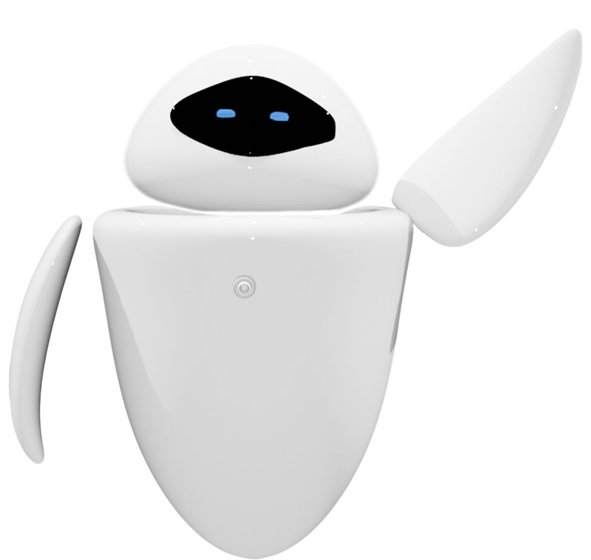

녹아내리는 얼음, 깨어나는 의식
OVERVIEW
영구동토층 해빙으로 펼쳐진 디스토피아,
그 속의 희망
<영구동토층, 깨어나는 땅의 기억>은 녹아내리고 있는 영구동토층을 중심으로,
지금 우리 곁에서 벌어지는 기후 위기를 이야기합니다.
미래에서 도착한 AI 드론의 기록을 따라가며, 관람자는 그 위기를 직접 마주하게 됩니다.
관람자는 몰입형 인터랙션을 통해 보이지 않던 위협을 몸으로 느끼고, 자신의 움직임을 통해 위협 요소를 인식하고 반응하면서
기후 위기가 먼 나라 이야기가 아닌 ‘지금 여기’의 현실임을 자연스럽게 체감하게 됩니다.
영구동토층은 2년 이상 지속적으로 얼어 있는 토양이나 암석층을 의미하며,
보이지 않는 지구의 시간은 지금 어디로 흐르고 있을까요?
영구동토층은 조용히, 하지만 점점 더 빠르게 변하고 있어요.
1
“북극 지역의 영구 동토층의 융해 및 그린란드 빙상이 전례 없는 속도로 녹고 있어…”
홍콩 비영리 환경단체 Earth.Org
〈2022년의 가장 큰 환경문제 12가지〉보고서 中
과학자들은 북극 지역의 영구 동토층의 융해 및 그린란드 빙상이 전례 없는 속도로 녹고 있으며, 6차 대멸종의 가속화, 아마존 열대우림의 삼림파괴 증가 등의 심각한 결과를 가져올 수 있는 임계점을 넘었다고 경고한다.
2
“영토 약 65%가 영구동토층인 러시아, 이대로면 전력 기반시설 중 5분의 1 이상 영향 예상”
[서울경제]
〈러시아 영구동토층 해빙에 석유 생산 위기 온다〉中
영구동토층은 여름에도 녹지 않고 2년 이상 토양 온도가 0도 이하로 유지되는 땅이다. 러시아 전체 영토의 약 65%가 영구동토층으로 분류된다. 그런데 지구온난화로 날씨가 따뜻해지자 영구동토층의 망속 얼음이 빠르게 녹고 있다.
3
“영원히 녹지 않는 땅 위에 세워진줄 알았던 건물들, 달라진 현실을 마주하고 있어”
[KBS news]
〈녹아드는 ‘동토의 땅’...시베리아에 냉각시설 ‘필수’〉 中
주요 변화는 약 10~15년 전 지구온난화가 시작되면서 생겨났다. 영구동토층이 녹으면서 지반이 불안정해지고 건물에서 약간의 변화가 나타나기 시작했다. 수업이 한창인 한 대학교에는 건물을 떠받치고 있는 기둥 곳곳에 균열이 생겼다.
Interactive Media Art Exhibition
“녹아내리는 얼음, 깨어나는 의식”
<영구동토층, 깨어나는 땅의 기억>
관람자는 미래에서 전송된 AI 드론의 기록을 수신하고,
붕괴되는 영구동토층의 현실을 직접 체험하게 됩니다.
차갑게 녹아내리는 지층, 사라진 생명, 침묵 속 경고.
이 전시는 감각과 사유가 만나는 지점에서,
기후 위기를 '몸으로 깨닫는' 순간을 제안합니다.
구성 요소
장소
러닝 타임
다큐멘터리 형식의 영상,
모션 캡처 기반 체험, 사운드,
시청각 인터랙션으로 구성
성수동 광장 앞
2m50s ~ 3m
MAIN CHARACTER
“나는 세르마.
영구동토층이 붕괴되던 그날, 인류는 무너졌습니다.”
세르마는 영구동토층 해빙 이후 탄생한 AI 드론으로, 기후 재난 이후의 데이터를 바탕으로
과거의 인간에게 메시지를 전달합니다.
이 전시의 전체 흐름을 안내하며, 관객이 위기의 흐름을 따라가도록 시선을 이끕니다.
과장된 감정 없이 차분한 어조로 사실을 전달하며, 관객 스스로 질문을 던지도록 유도하는
역할을 합니다.

SCENE
서서히 붕괴되는 세계 속, 관객은 다음과 같은 공간들을 지나게 됩니다.
1
호수 위
얼어붙은 호수 위,
AI 드론 세르마는 과거의 기록을 복원하며 이동합니다.
관객은 풍경 속에서 첫번째 경고를 받게 됩니다.
2
디스토피아
붕괴된 구조물과 죽은 생태계가 펼쳐진 풍경 속에서,
관객은 기후 위기가 만들어낸 미래의 흔적을 마주하게 됩니다.
3
노을진 호수
호수 위로 노을이 번지며 희망의 가능성이 암시됩니다.
세르마는 마지막 메시지를 전하며 관객에게
질문을 남깁니다.
VISUAL
영구동토층 해빙으로 심화된 기후 위기,
그로 인해 펼쳐진 어둡고 차가운 디스토피아적 도시 풍경.
그리고 점차 회복을 암시하는 따뜻한 색과 빛의 변화를 표현했습니다.
OBJECT
제작 : Blender
AI 드론 - 세르마
매끄럽고 유선형의 AI 탐사 드론. 흰색의 유광 바디와 검은 디스플레이형 얼굴에 파란 눈이 떠오르며, 친근하고 미래적인 인상을 줍니다.
유해 물질
광택과 매끄러운 표면으로 구현한 미지의 고대 바이러스, 탄저균, 메탄가스 등의 비가시적 위협을 시각적 오브젝트로 재구성 했습니다.
호수 위 오브젝트
맑고 차가운 수면과 기포, 물결의 질감을 활용한 호수 위 시각화 오브젝트 입니다. 영구동토층 아래 깨어나는 변화와 흐름을 상징합니다.
디스토피아 내 오브젝트
비정형적 붕괴와 구조적 왜곡, 거칠고 퇴색된 건물 텍스처로 구성한 디스토피아 도시 오브젝트 입니다. 파괴된 도시 경관을 통해 미래 환경 재난의 여파를 시각화 했습니다.
DESIGH BOARD
영구동토층 해빙에서 도시 붕괴로 이어지는 흐름을 차가운 블루 톤에서 검은 회색 빛으로 전이시키며, 위기의 단계성을 시각화 했습니다.
따뜻한 붉은 오렌지빛 노을진 호수로의 공간 변화는 희망을 암시하며, 색감 전환과 유기적·기하학적 오브젝트 대비로 긴장감과 가능성을 담았습니다.
TECHNOLOGY
Unity와 Azure Kinect DK를 활용해
관람자의 움직임에 반응하는 인터랙티브 체험으로 구현
INTERACTION
01
“그래픽 가까이에 손을 뻗어 정보를 확인해보세요.
더 많은 정보가 그 안에 있습니다."
관람자가 손을 뻗으면
각 장면마다 영구동토층 해빙으로 등장한 위협(바이러스,
메탄가스 등)에 대한
간략한 정보가 제공됩니다.
02
“시각화된 감염 반응이 신체에 나타났습니다.
화면 쪽을 향해 양팔을 크게 뻗고 외부로 밀쳐내어 제거해보세요”
모션캡처된 관람자의 몸 주위에 퍼지는 바이러스 이미지를
양팔을 뻗어 밀어내는 동작으로 제거하며 위기를 체감하게 됩니다.